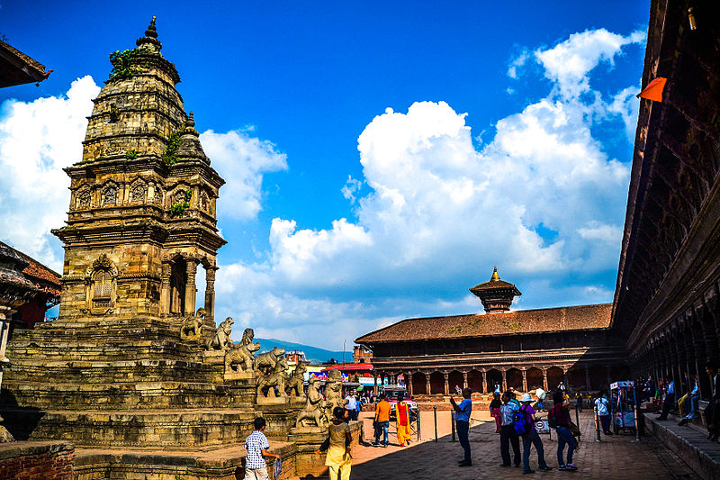

 The imposing Nyatapola Temple stands five tiers tall over Taumadhi Square in the Nepalese city of Bhaktapur,where it was built with time-t=nested virtuisity at the behest of King Bhupatindra Malla in 1702. While the temple is indeed a splendid relic of treasured Nepalese history,the building's structure is so solid that it withstood an 8.3 earthquake in 1934,followed by another in 2015,without any significant architectural damage.Wihin the sublime nyatopola temple is a shrine dedicated to Siddhi Lakshmi,which is purportedly so formidalbe that it's been reserved exclusively for temple priests since it was forged.Visitors egress the temple via a brick stairway guarded by five pairs of sculpted deities of ascending power:first the wrestlers Jayamel anh Phattu,believed to have possessed superhuman strength; followed by elephents,lions,then gyphons;and finally,just before the temple ddors,the goddesses Baghini-the"Tigress" and Singhini-the "Lioness.